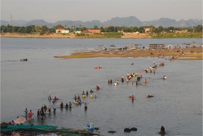
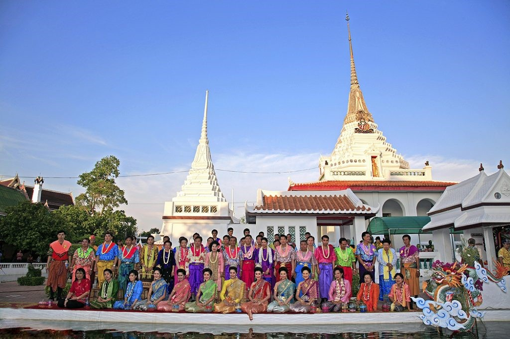
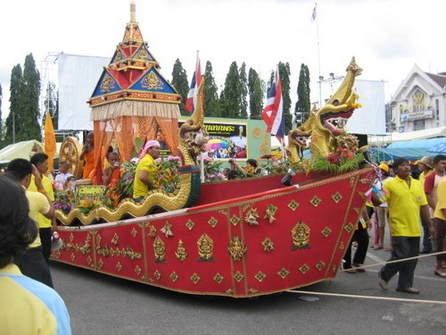

ประเพณีสงกรานต์ภาคเหนือ เรียกว่า “ปเวณีปีใหม่” หรือ “ปาเวณีปีใหม่” อ่านว่า “ป๋า-เว-นี-ปี๋-ใหม่” จัดขึ้นอย่างน้อย 3 - 5 วัน เรียกวันที่ 13 เมษายนว่า วันสังกรานต์ล่อง (อ่านว่า สังขานล่อง) หมายถึง วันที่ปีเก่าผ่านไป หรือวันที่สังขารร่างกายแก่ไปอีกปี
วันแรก คือ วันสังกรานต์ล่อง ชาวล้านนามีความเชื่อว่า ตอนเช้ามืดจะมีปู่สังกรานต์หรือย่าสังกรานต์ สวมใส่เสื้อผ้าสีแดงล่องแพไปตามลำน้ำนำสิ่งชั่วร้ายมาด้วย ดังนั้นชาวบ้านจะทำการยิงปืนหรือจุดปะทัดเพื่อเป็นการปัดเป่าสิ่งชั่วร้ายออกไป อีกทั้งยังนำพระพุทธรูปมาชำระและสรงน้ำอบโดยใช้น้ำขมิ้นส้มป่อย และทำความสะอาดบ้านเรือน
วันที่สอง คือ วันเนา หรือ วันเน่า หรือ วันดา ชาวล้านนามีความเชื่อว่า ห้ามผู้ใดทะเลาะเบาะแว้งกัน พิธีกรรมของวันเนานี้จะตระเตรียมสิ่งของและอาหารเพื่อนำไปทำบุญในวันพญาวัน ช่วงบ่ายจะขนทรายเข้าวัดและตัดกระดาษเป็นธงสีต่าง ๆ เรียกว่า “ตุง” สำหรับปักที่เจดีย์ทราย
วันที่สาม คือ วันพญาวัน เป็นวันเริ่มศักราชใหม่ มีการทำบุญตักบาตร ทำทานขันข้าว (ตาน-ขัน-เข้า) เพื่ออุทิศส่วนกุศลให้แก่บรรพบุรุษที่ล่วงลับไปแล้ว มีการไปคารวะผู้ใหญ่ เรียกว่า “ดำหัว”
วันที่สี่ คือ วันเล่นสาดน้ำ เรียกว่า วันปากปี๋ หมายถึง การรดน้ำดำหัวเจ้าอาวาสวัดอื่น ๆ ที่อยู่ใกล้เคียง
วันที่ห้า คือ วันปากเดือน ถือเป็นวันเริ่มเดือนใหม่ มีการดำหัวผู้ใหญ่และการเล่นสาดน้ำ
ประเพณีสงกรานต์ภาคอีสาน เรียกว่า “บุญสงกรานต์” หรือ “บุญเดือนห้า” หรือ “สังขานต์”
วันที่ 13 เมษายน เรียกว่า “มื้อสงกรานต์ล่อง” หรือ “มื้อสงกรานต์พ่าย”
วันที่ 14 เมษายน เรียกว่า “มื้อเนา” ชาวบ้านจะแต่งกายสวยงาม นำอาหารไปตักบาตรที่วัด ขอพรจากพระภิกษุผู้ใหญ่ และสรงน้ำพระพุทธรูปรดไปตามรางริน หนุ่มสาวมักรวมกลุ่มไปรดน้ำขอพรผู้ใหญ่ มีการจัดทำบายศรีสู่ขวัญผู้ใหญ่ หลังจากนั้นจึงเล่นรดน้ำกันเอง และช่วงกลางคืนมีการร่วมกันสวดมนต์เย็นและฟังธรรม
วันที่ 15 เมษายน เรียกว่า “มื้อสงกรานต์ขึ้น” นิยมฉลองสงกรานต์ต่อเนื่อง 7 - 15 วัน ในช่วงเทศกาลสงกรานต์คนที่ไปทำงานยังต่างถิ่นจะเดินทางกลับภูมิลำเนาเพื่อเป็นการรวมญาติและทำบุญอัฐิบรรพบุรุษที่ล่วงลับไปแล้ว เรียกว่า “สักอนิจจา”
วันเถลิงศกขึ้นปีใหม่ มีการสรงน้ำพระพุทธรูปและรดน้ำผู้ใหญ่เพื่อแสดงความกตัญญูกตเวที ในกรุงเทพมหานครประชาชนนิยมตักบาตรและสรงน้ำพระพุทธสิหิงค์ ณ ท้องสนามหลวง ประเพณีสงกรานต์ในเขตภาคกลางที่มีชื่อเสียงและมีความสำคัญยังมีในหลายพื้นที่ อาทิ ประเพณีสงกรานต์มอญ มีการจัดในหลายพื้นที่ในประเทศไทย เช่น บ้านแพ้ว จังหวัดสมุทรสาคร อำเภอปากเกร็ด จังหวัดนนทบุรี เป็นต้น โดยมีพิธีกรรมและการละเล่นที่หลากหลาย ตั้งแต่การทำบุญถือศีล การเซ่นสังเวยต่อท้าวกบิลพรหม เทวดาและนางสงกรานต์ การแห่ข้าวแช่ การแห่ธงตะขาบ การสรงน้ำพระ การค้ำโพธิ์ การขนทรายเข้าวัด และการเล่นสะบ้า
ประเพณีสงกรานต์พระประแดง เดิมเรียกว่า สงกรานต์ปากลัด เป็นรูปแบบที่คงรักษาวัฒนธรรมของชาวรามัญ-ไทย ที่ยึดถือปฏิบัติสืบทอดกันมาตั้งแต่สมัยพระบาทสมเด็จพระพุทธเลิศหล้านภาลัย เป็นหนึ่งในงานเทศกาลมหาสงกรานต์ 4 ภาคของการท่องเที่ยวแห่งประเทศไทย มีการจัดขบวนแห่ที่ยิ่งใหญ่และสวยงามตระการตา ขบวนแห่นางสงกรานต์ ขบวนรถบุปผาชาติ ขบวนสาวรามัญ-หนุ่มลอยชาย เอกลักษณ์การแต่งกายด้วยชุดไทยรามัญและชุดลอยชายเพื่อไปทำบุญที่วัด เวลากลางคืนจะมีการละเล่นสะบ้าตามบ้านเรือนต่าง ๆ โดยการเล่นน้ำในวันสงกรานต์พระประแดง หรือเรียกว่า “วันไหล” จัดขึ้นในช่วงวันหยุดเสาร์ - อาทิตย์ หลังจากงานสงกรานต์ปกติประมาณ 1 สัปดาห์
ประเพณีขึ้นปีใหม่ของภาคใต้เรียกว่า “วันว่าง” หมายถึง ว่างเว้นจากการทำงานทุกชนิด อีกทั้งยังมีความเชื่อต่าง ๆ เช่น การห้ามตัดผม ห้ามตัดเล็บ ห้ามฆ่าสัตว์ เป็นต้น โดยปกติจะจัดขึ้น 3 วัน คือ วันที่ 13 - 15 เมษายน เป็นโอกาสที่จะแสดงความกตัญญูต่อผู้ใหญ่ โดยการจัดหาผ้าใหม่ การอาบน้ำ สระหัว และขอพรจากผู้ใหญ่
วันที่ 13 เมษายน คือ วันส่งเจ้าเมืองเก่า มีการทำความสะอาดบ้านเรือน และพิธีกรรมสะเดาะเคราะห์ เรียกว่า ลอยเคราะห์ หรือลอยแพ เป็นการทำให้เคราะห์กรรมลอยไปกับเจ้าเมืองเก่า และสรงน้ำพระพุทธรูปคู่บ้านคู่เมือง
วันที่ 14 เมษายน คือ วันว่าง มาจากความเชื่อว่า ในวันนี้ยังไม่มีเทวดารักษาเมือง ชาวบ้านจึงหยุดการทำงานและไปทำบุญตักบาตร นำอาหารไปทำบุญถวายเพลที่วัด มีการทำพิธีเรียกว่า “ทำขวัญข้าวใหญ่” คือ การมัดรวงข้าวนำไปทำขวัญข้าวร่วมกันที่วัดเพื่อความเป็นสิริมงคลในการทำมาหากิน และรดน้ำขอพรผู้ใหญ่ รวมถึงทำบุญอัฐิเพื่ออุทิศส่วนกุศลให้บรรพบุรุษ
วันที่ 15 เมษายน คือ วันรับเจ้าเมืองใหม่ บางท้องถิ่นเรียกว่า วันเบญจา หรือบิญจา เป็นวันรับเทวดาองค์ใหม่มาดูแลรักษาบ้านเมือง มีการแต่งกายด้วยเสื้อผ้าและเครื่องประดับใหม่ บางบ้านมีการจัดพิธีรดน้ำดำหัวผู้ใหญ่เรียกว่า “พิธีจตุรมุข”
แหล่งที่มา